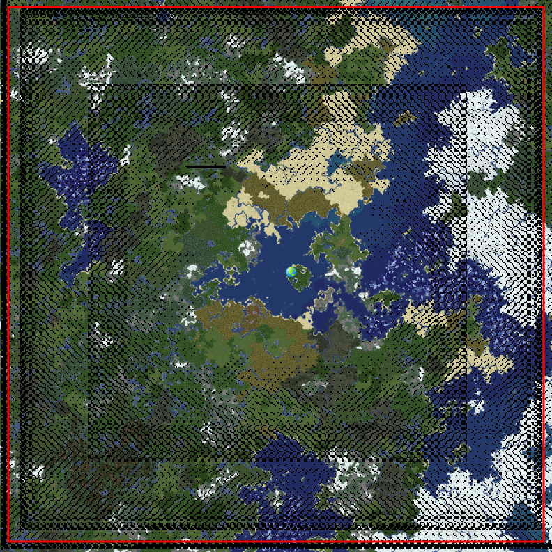

Welcome to Jaluinsky. On this server, we wish to play a semi-vanilla minecraft experience similar to that of Hermit Craft. We do not use mod packs, but are not shy to datapacks and resources packs. In addition, as this server is white-listed all members which we screen have been determined to be reasonable players with decent intentions. We do not wish to have intensive moderation, and would prefer to allow players to self govern themselves. The server rules are set up so that players should be able to handle disputes, and we will not intervene until all other avenues of settlement have been tried. The server rules are as follows: The only universal rule is that any other server rule can be changed with a super majority of players voting on it. Any one can propose a new rule at any time, and any rule that is detrimental to everyone's enjoyment can be changed or removed. In addition, these rules must be upheld by the players of the server. A rule-breaker will not be banned, but if he chooses not to follow the rules, he can't expext other members to abide by the rules when interacting with him. In very extreme cases, should a majority of members decide that a player is no longer welcome, he can be removed from the server. In addition, we wish to facilitate positive interactions between players with a system built on micro economies, trading, and contracts. Our goal is to use our skills and experiences to help each other out when building and gathering resources to create extremely large projects that look pretty cool and are impressive in comparison to most other minecraft worlds. The currently has some datapacks installed to make quality of life changes and make it possible to build late game creations more easily. Additional changes to these can be made if voted by by the super majority of players.
|
Territories will be drafted on the following map: |
 |
{kind=link}
The datapacks currently istalled are: [anti-enderman grief, customizable armor stands, double shulker shells, craft double slabs, dragon drops elytra, more mob head drops, eight stairs, multiplayer sleep, silence mobs, rotation wrench, track stats, treasure gems, universal dyeing, more bricks crafting, renewable coral blocks, gem villagers, track raw stats, back to blocks, giant phantoms, 4 bark blocks, 12 trapdoors, craftable gravel, anti-ghast grief, anti-creeper grief, player graves, ender beacons, death book, plated elytra, and mob statues]
|
Current Players 2/25
|
- Enfranchisement Creed
- All other server rules are eligible to change with the approval of at least a 65% supermajority of members willing to change a law.
- Crimes against Jaluinsky
- Violating rules laid out in this code demonstrates that you no longer wish to be protected by this code.
- Criminal Definition
- With the vote of at least 3 other Jaluiskians, by the /accuse command, a member will be sent to the courtroom for trial. {Bounty Systems?}
- Disputes between fewer members leave the burden of proof to the accusers.
- Trials
- Trials will be held over the course of a 24 hour time period (or until all member have voted) in which server members may evaluate all evidence laid out and vote to prosecute. At the the end of such trials, should the accused be found guilty, appropriate punishments will be granted. Should he be found innocent, the 3 initial accusers must pay repercussions equal to the current market value for 24 hours of server time.
- A punishment guide has been laid out at the following source, and will be followed under most circumstances.
- Territory
- (Raiding/Griefing) Raiding and griefing is prohibited by the the Jaluinsky code indefinitely. Should a player disown the code, and be proven guilty of raiding, he will have forfeited his protection, and thus those who raid his territories shall not be punished by law.
- Player Claims
- At the creation, founding members will be shown a map of Jaluinsky at which point they will lay claim to the settlements. A player may declare where he wishes his borders to lie, at which point, a 50% approval will set the claim in stone.
- Land claimed after launch is allotted to any player who wishes to protect it.
- Dueling
- Land disputes must be handled in a fight to the death. These fights must be consensual, and a loser’s items must be returned at the end of the fight.
- This clause can be applied to more scenarios if a group, faction, or multiple challengers wish to vie for that same land.
- Player vs. Player interactions
- Contracts made between multiple players must be upheld. Violations of contracts are considered an offense which can justify a trial by the state.
- Players may not fight without the consent of all involved parties.
- Chat Abuse
- Spamming attracts a mystical bird of prey which is fond of the throat of players. This will render a player unable to speak. In order to heal such injuries, 10 mages must band together and perform a healing ritual outlined here. {9 mages must simultaneously throw 1 block of diamond into a pit of lava while the final mage sacrifices the mute player. Upon revival, the throat shall be restored, and the player will be able to talk again.}